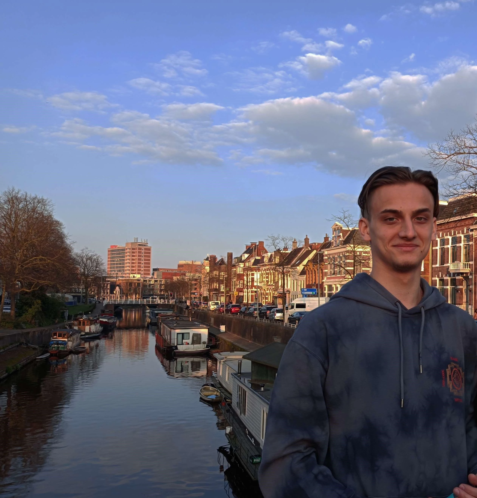

Models and Animations
About Me

During my high school years, my interest in programming and editing began to grow. Over the four years, I honed my skills in C++ and fostered a foundation of critical thinking. While solving coding challenges was enjoyable, I craved a means to channel my creativity through programming. This led me to question how lines of code could culminate in a captivating gaming experience on people's screens. Concurrently, I delved into the realm of editing software, such as Photoshop and Sony Vegas, initially for personal amusement. As time progressed, I honed my proficiency in these tools, relishing the hours I dedicated to each project.
With a passion for programming firmly established, I made the decision to pursue computer science in my home country, Romania. However, upon reflection, I realized that this field did not wholly satisfy my aspirations. Nevertheless, certain courses provided invaluable knowledge, particularly in Python and computing systems architecture by experimenting with x86 Assembly, nurturing my critical thinking aptitude.
My journey ultimately led me to Hanze University of Applied Sciences, where I am currently nearing the completion of my first year. Here, I have been exposed to game industry programs and have had the privilege of collaborating with exceptional individuals on group projects. It is within this environment that I have undeniably discovered my true passion.
Resume
Education
- 2D and 3D Game Programming
- 2D Art
- 3D Modeling and Animation
- Game Design Theories
- Scrum Methodology
- Level and Narrative Design
- User Experience and User Interface
- x86 Assembly
- Python
- Computer Architecture
- Linux and VirtualBox
- Web Development
Skills
- C# and C++
- Git Version Control
- CSS
- HTML
- GitHub
- Unity
- GameMaker Studio 2
- Adobe Photoshop and Illustrator
- Blender
- Figma
- Trello
- Able to efficiently manage my time and prioritize my work
- Able to plan my work and set goals
- Able to constantly adapt to new work environments
- Able to problem-solve through observation, brainstorming, and logical reasoning
- Experienced at working within a team and being an active team member
- Experienced at communicating and presenting ideas
- Experienced at researching and troubleshooting encountered problems